Largest individual side-canyon to the Grand Canyon famous for its aquamarine color of the streams and ponds.
General Information
- Length:
- 20 miles roundtrip (to Havasu Falls Campground)
- Elevation Gain:
- 2,500 feet
- Difficulty:
- Strenuous
- Hours:
- Open year-round with a valid Havasupai permit and reservation; overnight stays are required and day hiking is not permitted.
- Fees:
- Permit required. Camping reservations are approximately $455 per person for a 4-day/3-night stay.
- Pet Policy:
- Pets are not allowed on the Havasu Falls trail.
- Closest cities with hotels:
- Kingman, AZ (about 65 mi to Hualapai Hilltop trailhead)
- Seasons:
- Spring and fall are the best times to visit (March–May and September–November).
- Location:
- Hualapai Hilltop Trailhead, AZ
- Website:
- havasupaireservations.com
How to Get There
From Kingman, AZ (65 mi): Take I-40 east to Exit 53, follow Historic Route 66 through Peach Springs, turn onto Indian Road 18, and continue north for approximately 60 miles to Hualapai Hilltop Trailhead, the starting point for the hike to Havasu Falls.
Overview
The Havasupai Indian Reservation covers about 188,000 acres of plateau and canyon land on the southwestern edge of the Grand Canyon, and is the homeland of the Havasupai Tribe, who have lived and farmed in Havasu Canyon for centuries. The reservation was established in 1880 but was soon reduced to a small strip of land on the canyon floor, leaving the tribe cut off from the plateau lands it had long used for hunting and gathering. After decades of advocacy, the Grand Canyon Enlargement Act of 1975 returned roughly 185,000 acres to the tribe, one of the largest land returns to a Native American tribe in U.S. history. Today most tribal members live in the village of Supai on the canyon floor, and tourism to the waterfalls of Havasu Creek is the main source of income for the community. Visitors are guests on sovereign tribal land and are expected to follow tribal rules, respect the village and its residents, and pack out everything they bring in.
Visiting the reservation requires planning well in advance. All reservations are made through the tribe's official website, havasupaireservations.com, and are released early in the year for the entire season, typically through an online pre-registration and selection process followed by a limited booking window; spots sell out almost immediately, and cancelled reservations are sometimes resold through the same site. Reservations are only for overnight stays, either at the campground or at the Havasupai Lodge in Supai. Campground reservations run about $455 per person for a 3-night stay, including permits and fees, while lodge rooms cost roughly $2,000 or more per room for 3 nights and sleep up to four people, making the lodge comparable in price per person for a full group. The reservation holder must be present with photo ID to check in. To get there, drive to Hualapai Hilltop at the end of Indian Road 18 off Route 66 near Peach Springs, then hike 8 miles to Supai and another 2 miles to the campground. Visitors can also hire pack mules through the tribe to carry gear, or take a short helicopter flight between Hualapai Hilltop and Supai on select days, though flights are first-come, first-served and tribal members receive priority. Always confirm current rules, fees, and check-in procedures on the tribe's website before your trip, as they change frequently.
Havasu Falls
Havasu Falls is a spectacular 100-foot waterfall of turquoise water plunging into travertine pools in Havasu Canyon, on the Havasupai Indian Reservation at the bottom of a Grand Canyon side canyon. It is the most famous of a string of waterfalls along Havasu Creek, including Mooney Falls and Beaver Falls, whose blue-green water gets its color from calcium carbonate. Havasupai means "people of the blue-green waters." Havasupai land became surrounded by Grand Canyon National Park in 1919 while remaining under tribal control, and access is managed by the Havasupai Tribe. Reaching the falls requires a long hike, mule ride, or helicopter flight, and an advance reservation.
Getting to the Trailhead
The trail starts at Hualapai Hilltop, at the end of Indian Road 18, a paved road that runs north from historic Route 66 near Peach Springs. The road is accessible to all vehicles, but it is long and remote, with no services, so fill up on gas beforehand. Hualapai Hilltop has a large parking area and restrooms, and parking often overflows along the road. Most hikers spend the night before in Peach Springs or Seligman to start early. Supai, the tribal capital, is 8 miles from the nearest road and reachable only on foot, by mule, or by helicopter; it is the only place in the U.S. where mail is still delivered by mule.
Trail Description
From Hualapai Hilltop, the trail switchbacks down for about three-quarters of a mile, the hardest part of the hike, especially on the way back up. It then follows a dry streambed for about 5 miles through a narrowing canyon before reaching Havasu Creek and the village of Supai, where hikers check in. Beyond Supai, the trail passes Fifty Foot Falls and Little Navajo Falls, which formed after a 2008 flood ended Navajo Falls, and reaches Havasu Falls about 1.5 miles from the village. The campground stretches along the creek below Havasu Falls, about 10 miles from the trailhead. From the far end of the campground, a precarious route through tunnels and down chains and ladders descends to the base of 210-foot Mooney Falls, and a rugged trail with several creek crossings continues about 2 more miles to Beaver Falls. The confluence with the Colorado River is a long, difficult hike beyond for experienced hikers. The hike to the campground and back is about 20 miles round trip.
Trail Conditions and Difficulty
The hike to Havasu Falls is strenuous, mainly because of its length and the steep climb back to Hualapai Hilltop, about 2,500 feet above the campground. Summer temperatures often top 100 degrees, so start before dawn and carry plenty of water. Horses and mules are available to carry packs or riders. The descent to Mooney Falls is slippery and exposed, with wet chains and ladders, so take great care. Flash floods have repeatedly reshaped the falls and closed the canyon, most recently in 2024, so watch the weather and follow tribal instructions. Pets are not allowed on the trail.
Permits and Reservations
All visitors must have a reservation from the Havasupai Tribe, which manages access to Supai and the falls. Day hiking is not permitted, and reservations are for overnight stays, either in the campground or at the lodge in Supai, typically for three nights. Campground reservations cost about $455 per person and are sold online early in the year, often selling out quickly; check the tribe's official website for current dates, fees, and rules. The tribe also runs a café, general store, and tribal museum in Supai.
This article uses material from the Wikipedia article "Havasupai Indian Reservation", "Supai, Arizona", "Havasupai Trail", "Havasu Creek", and "Havasu Falls", which is released under the Creative Commons Attribution-Share-Alike License 3.0.
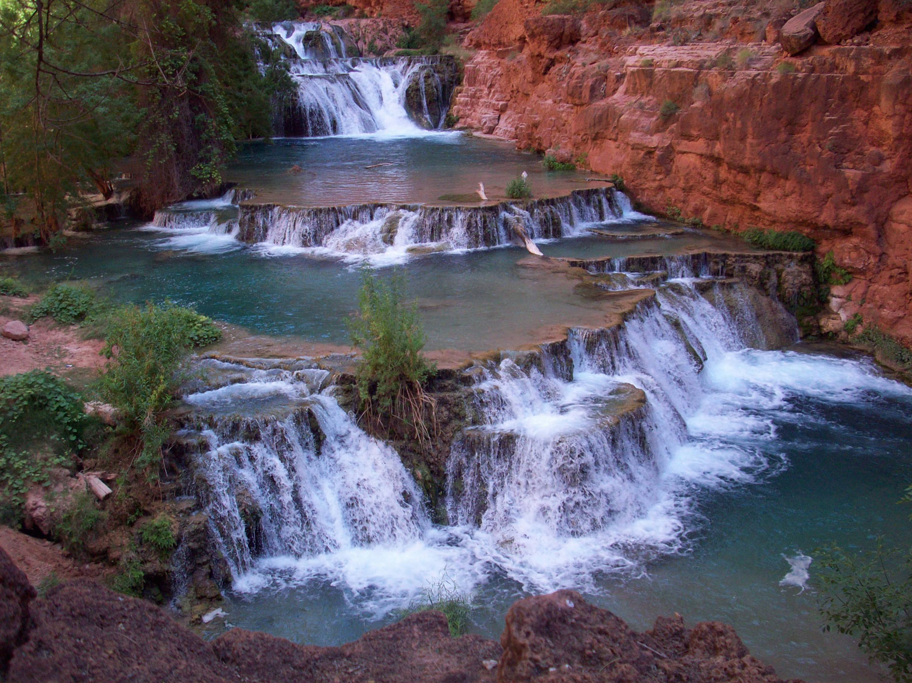

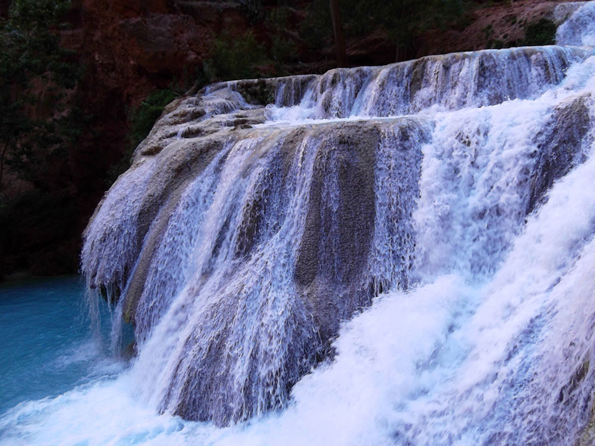

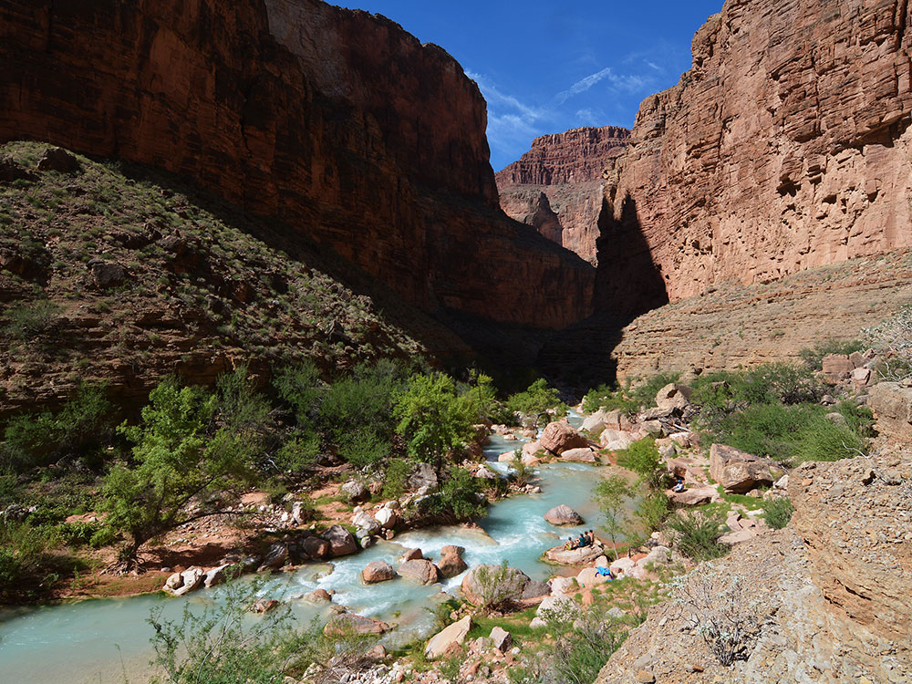

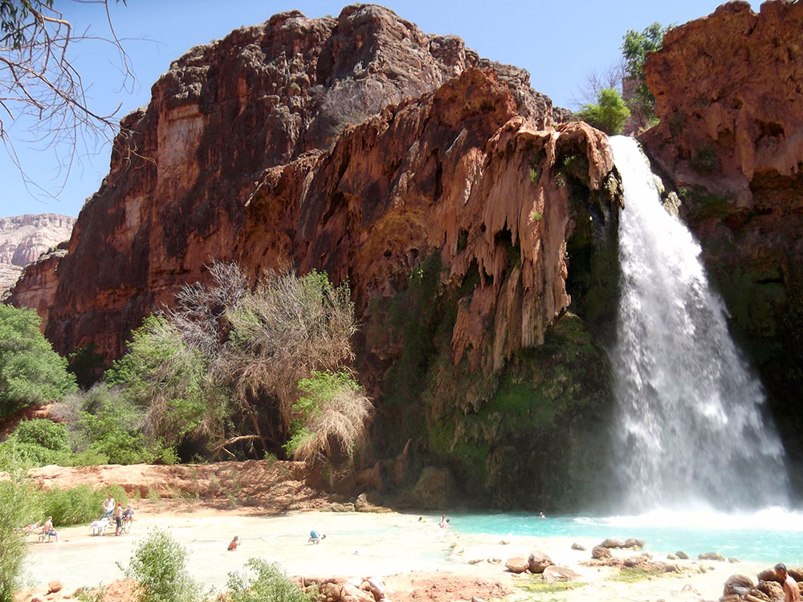

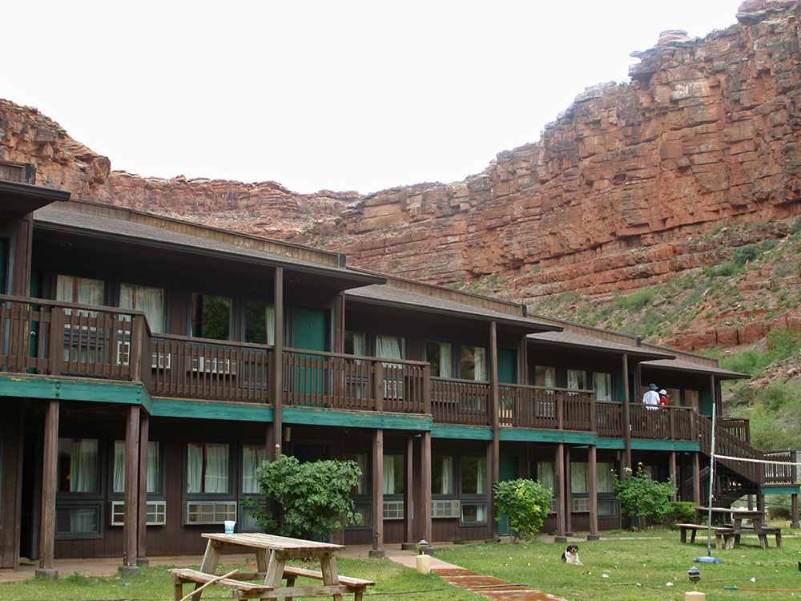

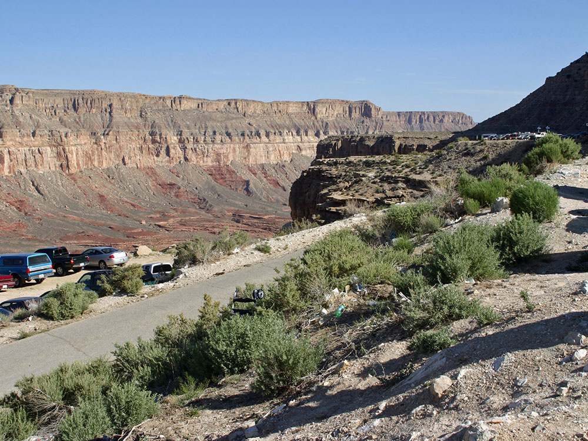

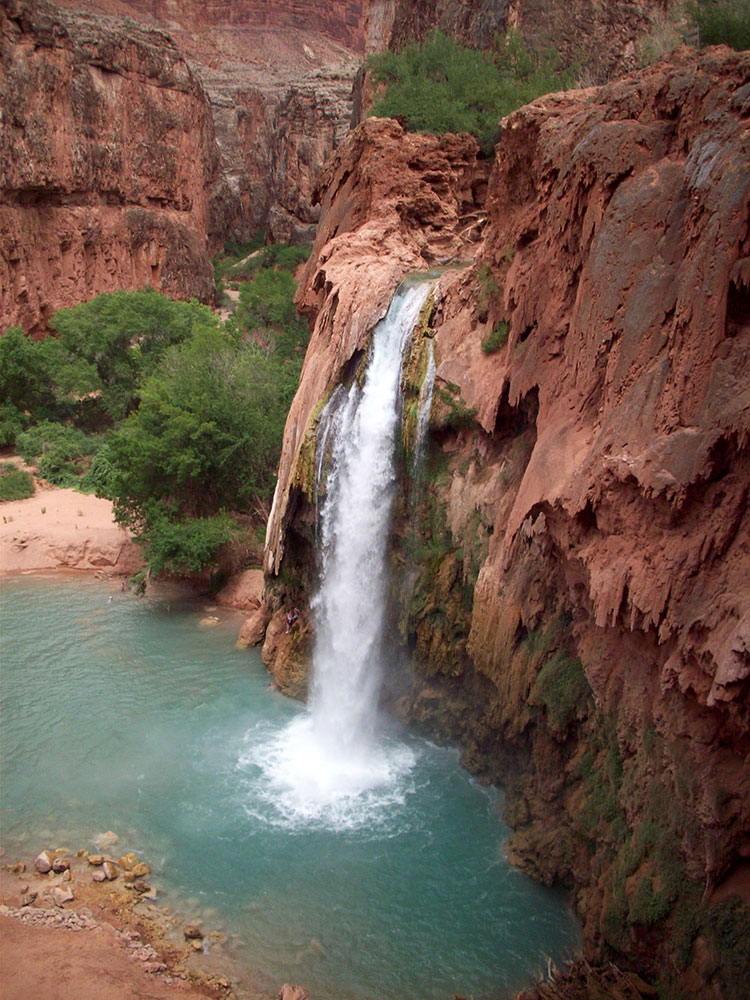

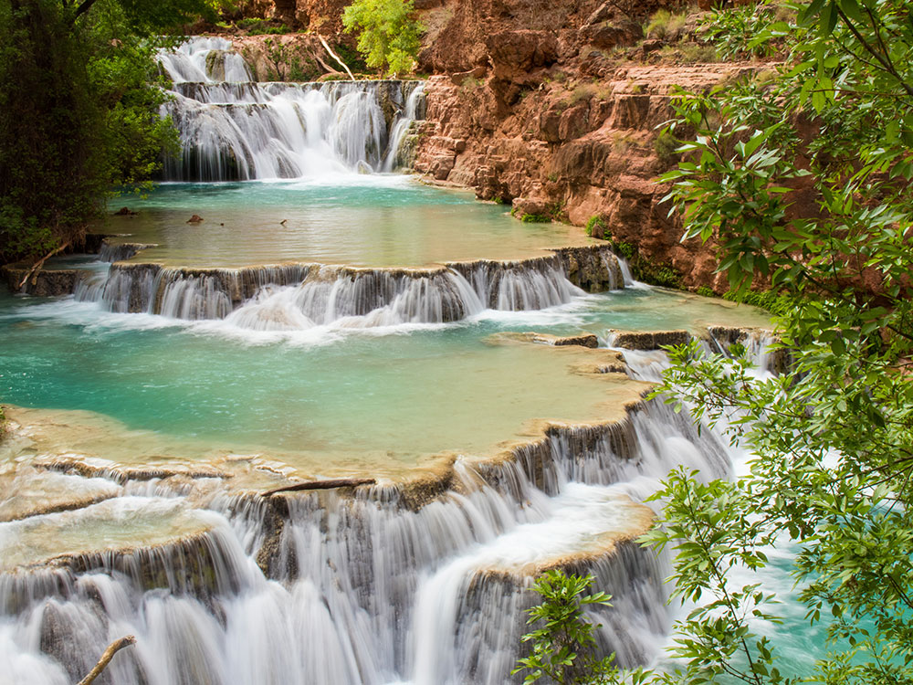
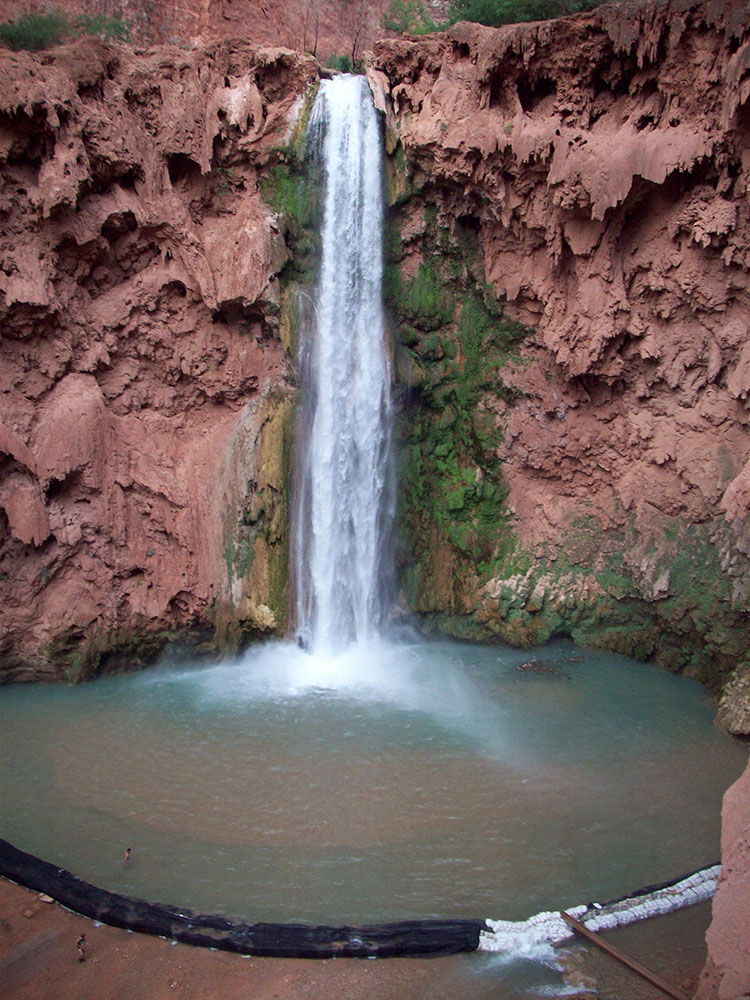

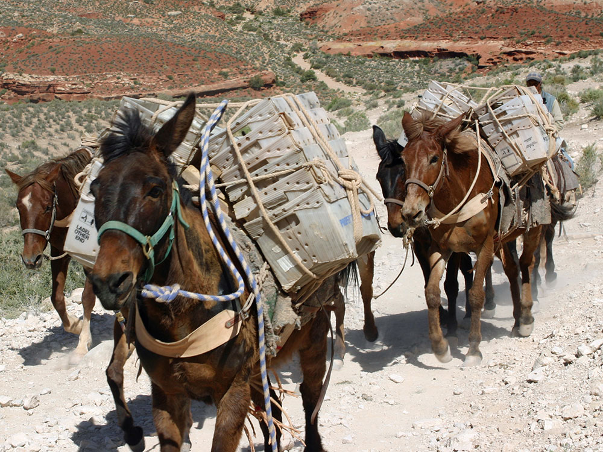

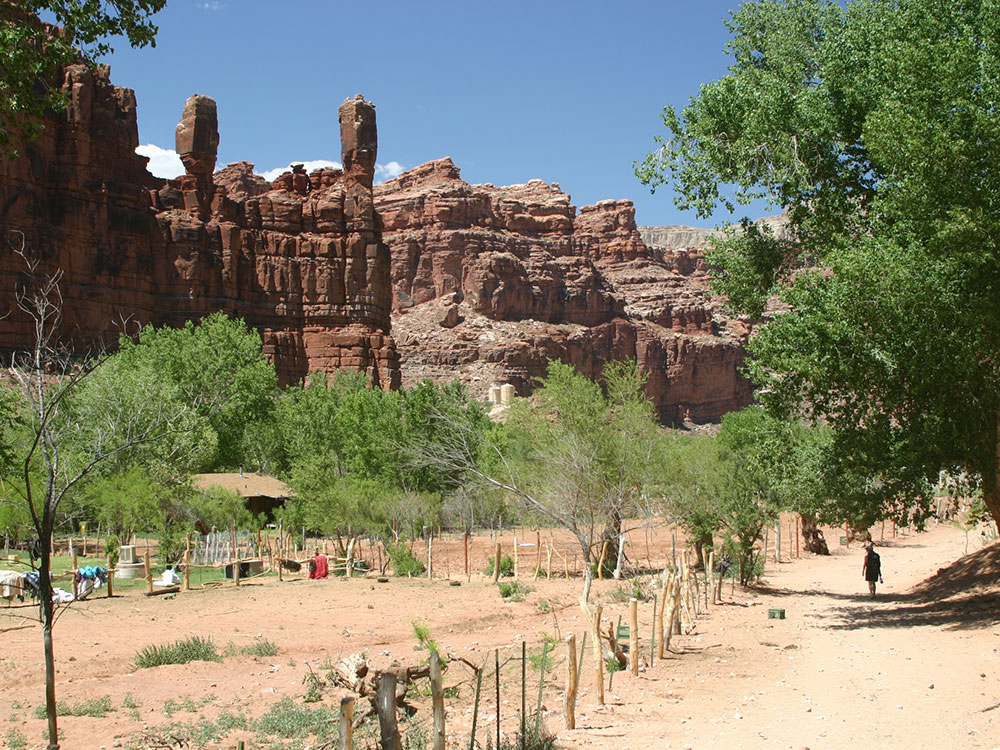

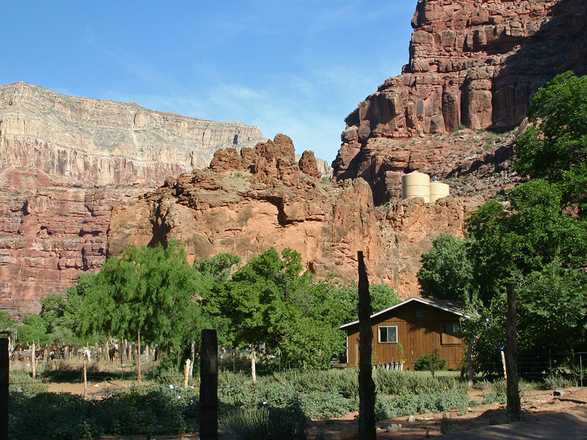

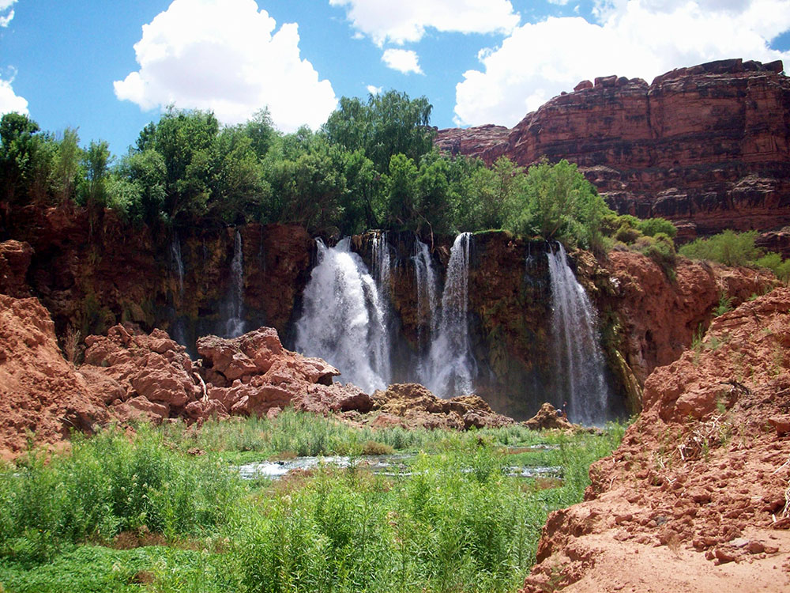